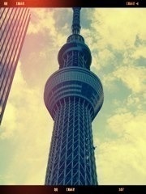
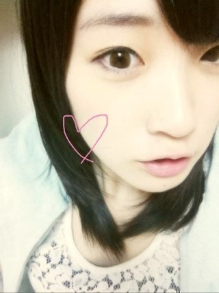

2012/0927Thu（´-`）.｡oO(かずみん×100
いつも応援ありがとうございます！
今回は記念すべき
（´-`）.｡oO(かずみん×100
の記事です！
ここまでくるのに
長かったです(⌒-⌒; )
私はブログで
1つ記事を書くのに3時間は
かかってしまいます！(>_<)
書きたい気持ちは山々なのですが、
まず、一眼レフの画像を
スマホに移すのにパソコンを
使わなくてはなりません(´･_･`)
だから時間がかかってしまって><
そして私は文系でしたが、
得意な教科は数学と情報だったため
文章を書くのが苦手なんです(´Д` )
ごめんなさいね(T ^ T)
こんな不器用な私を温かく
見守ってくださっているみなさん、
本当にありがとうございます。
ブログを通じて
みなさんに感謝の気持ちを
伝えられるし、
私自身のことを沢山
伝えることができた(*^^*)
本当に嬉しいです！
これからもよろしくお願いします！
--------
先日、会社に行ったら
girls!plusが置いてありました！
生駒ちゃんが載ってたからあった
みたいなのですが、
今回はハロプロ特集だったので
スタッフさんにお願いして
いただいちゃいました\(//∇//)\
あぁ、愛理ちゃん可愛い...
道重様は美しすぎる！
休みの日はよく
ハロ紺のDVDを見て
歌とダンスと見せ方の
研究をしています(*^^*)
昭和のアイドルが
尊敬目標だとしたら
ハロプロは
永遠の私のアイドルです！
ん〜
違いを説明するのが難しいなぁ...
ハロプロに入ろうとは
思わなかったの？
とよく質問されますが、
私は入りたくても
入れなかったんですね。笑
でも運命的に私は乃木坂46に
入ることができたので、
私を必要としてくれた秋元康さん、
スタッフのみなさんには
本当に感謝しています！
さぁ私はこれから
スカイツリーのように
まっすぐな姿勢で、
ポジティブという電波を
沢山の人に飛ばせていけるように
頑張っていきたいです！


それでは、
明日もいい日になりますように。
"感謝×100"
おやすみなさい...☆
2012/09/27 22:30
コメント(566)
【祝】100回更新おめでとう！！！
もっと更新してねー
もっと更新してねー
かずみさん、ブログ100回目おめでとう！
ブログ、自分のペースでいいよ
これからも応援してるよ
ブログ、自分のペースでいいよ
これからも応援してるよ
かずみんやっほー
100回目おめでとう！
これからもガジ頑張ー
明後日またやまちゃんと行くわ～
ほなねﾉｼ
100回目おめでとう！
これからもガジ頑張ー
明後日またやまちゃんと行くわ～
ほなねﾉｼ
100おめでとう だぜぜぜぜーい
僕もかずみんに感謝×100＾ロ＾
かずみんのポジティブセイ！好き
かずみんのポジティブセイ！好き
ずっと前から思ってたけど
かずみんって愛理ちゃんに似てるよね？
℃-uteの(^○^)
100回目おめでとう！
握手会で確かにポジティブ受け取りました！(笑)
握手会で確かにポジティブ受け取りました！(笑)
ブログ100回更新おめでとう！(*^□^*)
(初コメ)
これからも頑張ってね＞＜
(初コメ)
これからも頑張ってね＞＜
ブログ100回更新おめでとう！！
100回おめでとう( ´ ▽ ` )ﾉ
3時間かo(^▽^)o
かずみんなら何時間でも待つよ( ´ ▽ ` )ﾉ
乃木坂に入ってくれてよかっよー！
大好きだからo(^▽^)o
そして今ガッシュ6巻よんでるー( ´ ▽ ` )ﾉ
感動だよね！
これからも更新よろしくお願いします＼(^o^)／
お仕事がんばってねー！
3時間かo(^▽^)o
かずみんなら何時間でも待つよ( ´ ▽ ` )ﾉ
乃木坂に入ってくれてよかっよー！
大好きだからo(^▽^)o
そして今ガッシュ6巻よんでるー( ´ ▽ ` )ﾉ
感動だよね！
これからも更新よろしくお願いします＼(^o^)／
お仕事がんばってねー！
いもブログ更新お疲れさまです☆
自分もかずみんを見習ってポジティブに毎日がんばっていきます(´∀｀)♪
これからもお仕事頑張ってください☆
自分もかずみんを見習ってポジティブに毎日がんばっていきます(´∀｀)♪
これからもお仕事頑張ってください☆
100回
おめでとう！！
これからも更新よろしく！！
そして
ハロでは
ベリの梨沙子が好き！笑
かずみんと一緒！
ではでは。
季節の変わり目だから
体調管理しっかりね！
明日も一日頑張りまいやん！！
おめでとう！！
これからも更新よろしく！！
そして
ハロでは
ベリの梨沙子が好き！笑
かずみんと一緒！
ではでは。
季節の変わり目だから
体調管理しっかりね！
明日も一日頑張りまいやん！！
ポジティブせーーーーい
スカイツリーうつくしいわーー
かずにんも焼けど 笑
こんばんは!!
100回更新おめでとう×100！
毎回長い時間かけてブログ更新ありがとう♪
毎回楽しくしっかり読んでるよ♪
これからも乃木坂46で頑張ってね！
ではまた！
100回更新おめでとう×100！
毎回長い時間かけてブログ更新ありがとう♪
毎回楽しくしっかり読んでるよ♪
これからも乃木坂46で頑張ってね！
ではまた！
こんばんわに
ポジティブかずみんっ！
ぼくはとてもネガティブだからかずみんっ！がうらやましいなぁとおもうなぁ
おわりだなぁ
ポジティブかずみんっ！
ぼくはとてもネガティブだからかずみんっ！がうらやましいなぁとおもうなぁ
おわりだなぁ
かずみさん、お疲れさま。
100回更新おめでとうー。
いつもかずみさんのブログ楽しみにしてるよ。
かずみさんと乃木坂で出会えてよかったー。
ありがとう。感謝だね。
あさってかずみさんに会える楽しみ
100回更新おめでとうー。
いつもかずみさんのブログ楽しみにしてるよ。
かずみさんと乃木坂で出会えてよかったー。
ありがとう。感謝だね。
あさってかずみさんに会える楽しみ
１００回!!
おめでとう！！！
時間があるときにゆっくりでいいよ！
一言更新とか(笑)
ポジティブ電波受信しました！！(笑)
けど、全握行けないのは、……
はぁ…(T_T)
おめでとう！！！
時間があるときにゆっくりでいいよ！
一言更新とか(笑)
ポジティブ電波受信しました！！(笑)
けど、全握行けないのは、……
はぁ…(T_T)
１００回更新おめでとぉぉ＾＾
疲れてる時のブログ更新て大変だよね...
ここまでの更新お疲れ様＾＾
これからも毎回読むから、更新楽しみにしてるよ！
明後日の名古屋個別券少ないけど...行くからね♪
またいろいろ話そう＾＾
明日からも仕事ガジがんばって！
ファイティーン☆
疲れてる時のブログ更新て大変だよね...
ここまでの更新お疲れ様＾＾
これからも毎回読むから、更新楽しみにしてるよ！
明後日の名古屋個別券少ないけど...行くからね♪
またいろいろ話そう＾＾
明日からも仕事ガジがんばって！
ファイティーン☆
100回更新おめでとう
＼(^o^)／ポジティブ！！！
文系やのに数学と情報が得意とか俺と一緒ｗｗ
ちなみに俺は数学、情報、生物得意で国語、英語苦手な文系ですｗｗ
どう考えても理系向きｗｗ
でも物理、化学苦手やから文系なんですｗｗ
これからもポジティブ＼(^o^)／に頑張れ！！
さかちょん
どーも！オレンジです！
100回目おめでとぉぉぉぉぉぉぉぉ
記念になにか企画みたいのやってほしい(*^^*)
質問返しとかさ(^^)d
理系で数学しかできない男です(泣)
俺、あまりハロプロは見ないから道重さんくらいしかわからないや(^^;
かずみんしかぁぁぁ(笑)
よし！テスト近いけど
「ポジティブ＼(^o^)／」に考えて頑張ろう＼(^^)／
これからも頑張っていこうね(*^^*)
短くでごめん(ToT)
それじゃあこの辺で！
今日はお疲れ様(*^^*)
明日も頑張ろう
愛羅武勇
 オレンジ
オレンジ
100回目おめでとぉぉぉぉぉぉぉぉ
記念になにか企画みたいのやってほしい(*^^*)
質問返しとかさ(^^)d
理系で数学しかできない男です(泣)
俺、あまりハロプロは見ないから道重さんくらいしかわからないや(^^;
かずみんしかぁぁぁ(笑)
よし！テスト近いけど
「ポジティブ＼(^o^)／」に考えて頑張ろう＼(^^)／
これからも頑張っていこうね(*^^*)
短くでごめん(ToT)
それじゃあこの辺で！
今日はお疲れ様(*^^*)
明日も頑張ろう
愛羅武勇
かずみんヤッホー！
100回更新おめでとー！
文章を書くのが上手な人、絵を描くのが上手な人、歌やダンスが得意な人、得手不得手はそれぞれだから、更新はかずみんのペースで構わないよ。
☆ハロプロさんじゃなくて乃木坂に入ってくれて嬉しいよ♪アリガトー！
☆スカパー！アワードも観たよ。
100回更新おめでとー！
文章を書くのが上手な人、絵を描くのが上手な人、歌やダンスが得意な人、得手不得手はそれぞれだから、更新はかずみんのペースで構わないよ。
☆ハロプロさんじゃなくて乃木坂に入ってくれて嬉しいよ♪アリガトー！
☆スカパー！アワードも観たよ。
100到達ｵﾒﾃﾞﾄｰ! 次は1000目指してｶﾞﾝﾊﾞﾚ!!)Oo｡.(・∀・)
こんばんかずみん！！
かずみん！俺も一眼レフ使うから
毎回パソコンにつなげる作業が（笑）
分かる～＼(^o^)／
3時間…大変や(´；ω；｀)
文系で数学と情報！
かずみさんらしい謎さ！ヽ(・∀・)ノ
かずみん可愛い！×100
かずみん！俺も一眼レフ使うから
毎回パソコンにつなげる作業が（笑）
分かる～＼(^o^)／
3時間…大変や(´；ω；｀)
文系で数学と情報！
かずみさんらしい謎さ！ヽ(・∀・)ノ
かずみん可愛い！×100
かずみん！
100回更新おめでとう＆お疲れさま！
いいの。いいの。いいの。
かずみんのペースで更新してくれたらいいの。いいの。
これからもブログ楽しみにしています。
次は200回更新目指して頑張ってね！
更新ありがとう×100
自我撮り最近上手くなったね。('∀')ニヤ
ばいなら！
p(^^)q
100回更新おめでとう＆お疲れさま！
いいの。いいの。いいの。
かずみんのペースで更新してくれたらいいの。いいの。
これからもブログ楽しみにしています。
次は200回更新目指して頑張ってね！
更新ありがとう×100
自我撮り最近上手くなったね。('∀')ニヤ
ばいなら！
p(^^)q
かずみん（´-`）.｡oO（100回おめでとう♡♡♡
お久しぶりコメントです！
記念すべき100回目と言うことで♪♪
かずみんのブログはいつも長々書いてあって
ファン思いで・・・
一生懸命書いてる感じが伝わる(>_<)
乃木どこでは面白いのに
ブログになるとなぜか真面目（笑）
これからも高山＆中田コンビを
応援するぜぜぜぜーい！！！
明日も頑張ろう♪では
お久しぶりコメントです！
記念すべき100回目と言うことで♪♪
かずみんのブログはいつも長々書いてあって
ファン思いで・・・
一生懸命書いてる感じが伝わる(>_<)
乃木どこでは面白いのに
ブログになるとなぜか真面目（笑）
これからも高山＆中田コンビを
応援するぜぜぜぜーい！！！
明日も頑張ろう♪では
みーたんばんちゃ(^O^)／
ゆーたんなう
ついに100の大台にきたね(^.^)b
てことは100コメてことだな＾ロ＾;
ポジティブな電波は毎日受け取ってるよ(^ω^)
幸せだぁ！！
無理せずかずみのペースでこれからも発信してね
今日も可愛いよ(●^ー^●)
1日お疲れちゃん
ぢゃぁ
(一実o^∀^o46)
↑
これ大事
ゆーたんなう
ついに100の大台にきたね(^.^)b
てことは100コメてことだな＾ロ＾;
ポジティブな電波は毎日受け取ってるよ(^ω^)
幸せだぁ！！
無理せずかずみのペースでこれからも発信してね
今日も可愛いよ(●^ー^●)
1日お疲れちゃん
ぢゃぁ
(一実o^∀^o46)
↑
これ大事
ブログ100回おめでとう♪
長かったような短かったような
かずみんの見るたび
いつも元気もらってた！
こちらこそ感謝×100
これからもかずみん頑張って!
ブログ載せたら絶対コメント
するから！
(´・ω・`)
長かったような短かったような
かずみんの見るたび
いつも元気もらってた！
こちらこそ感謝×100
これからもかずみん頑張って!
ブログ載せたら絶対コメント
するから！
(´・ω・`)
頑張ってください
応援してます！
俺らもかずみん必要ですよー
本当応援してます！
応援してます！
俺らもかずみん必要ですよー
本当応援してます！
100回目にして初めてコメントします！
100回おめでとうー♪( ´▽｀)
ブログって意外と時間かかるし、文章って難しいよね(^◇^;)
かずみんのポジティブ＼(^o^)／なところ大好きなのでこれからも頑張ってね♪
100回おめでとうー♪( ´▽｀)
ブログって意外と時間かかるし、文章って難しいよね(^◇^;)
かずみんのポジティブ＼(^o^)／なところ大好きなのでこれからも頑張ってね♪
こんばんは。
お疲れ様です。
ブログ100、
おめでとうございます。
おやすみなさい。
お疲れ様です。
ブログ100、
おめでとうございます。
おやすみなさい。
100回更新おめでとっ‼
かずみん見てると元気になれる‼
かずみん見てると元気になれる‼
かずみん こんばんは(^-^*)/
ブログ更新100回目☆
おめでとう(*^▽^)/
かずみんのポジティブパワーで、いつも元気もらってるよ♪
ありがとう(v^-゜)
かずみんは乃木坂に絶対に必要な存在ですよ(^O^)/
これからも かずみんらしく頑張ってくださいね☆
名古屋個握 お願いします！
その楽しみを持って、明日の仕事がんばってくるよp(^^)q
ブログ更新100回目☆
おめでとう(*^▽^)/
かずみんのポジティブパワーで、いつも元気もらってるよ♪
ありがとう(v^-゜)
かずみんは乃木坂に絶対に必要な存在ですよ(^O^)/
これからも かずみんらしく頑張ってくださいね☆
名古屋個握 お願いします！
その楽しみを持って、明日の仕事がんばってくるよp(^^)q
100回更新おめでとう
そんな時間かけてブログ書かんでもいいよ
日記でいいんやから
これからも楽しみにしてます
こんばんは！
１００回目おめでとう！
２００、３００とまだまだ頑張ってね。
前もだけど、かずみんの自撮りがかわいくて…
また載せてね。
明日も頑張ってね！
１００回目おめでとう！
２００、３００とまだまだ頑張ってね。
前もだけど、かずみんの自撮りがかわいくて…
また載せてね。
明日も頑張ってね！
沖縄最高！
かずみんはハロプロヲタか 笑
アイドルって最高よね。
乃木坂に感謝してるよ。
これからも感謝です。
なーか
お疲れ様です！！
100回おめでとうございます＼(^o^)／
これからもポジティブに頑張ってください！！
100回おめでとうございます＼(^o^)／
これからもポジティブに頑張ってください！！
こんばんは、お疲れ様です
ブログ更新100回目おめでとうございます♪
かずみんのブログ大好きです。そしてやっぱり区切りの数字って気持ちいいもんですね
101回目のブログも楽しみにしてます
かずみん、いつもありがとう
ブログ更新100回目おめでとうございます♪
かずみんのブログ大好きです。そしてやっぱり区切りの数字って気持ちいいもんですね
101回目のブログも楽しみにしてます
かずみん、いつもありがとう
おめでとう( ^-^)ノ∠※。.:*:・'°☆
100回達成なんてまさにアメイジング＼(^-^)／
100回達成なんてまさにアメイジング＼(^-^)／
お疲れさまー~
ポジティブSAY！
＼amazing／
＼(^▽^)／麼麼噠
ポジティブSAY！
＼amazing／
＼(^▽^)／麼麼噠
俺もこれを期に猫背を治してまっすぐな姿勢になりたいと思います！
一眼女子かずみん おはようございます。
ブログ100回記念おめでとう！ 私は最初から参加してるわけではないけど、かずみんの可愛いさ、一生懸命さ、更には趣味が同じ一眼レフ等に共感し、ブログ読者になりました。
忙しい中ブログを書くのは大変とは思うけど、本当に楽しみにしているので、これからもポジティブによろしくお願いします！
また握手会で会えるのを楽しみにしています。写真も期待していますね！
ブログ100回記念おめでとう！ 私は最初から参加してるわけではないけど、かずみんの可愛いさ、一生懸命さ、更には趣味が同じ一眼レフ等に共感し、ブログ読者になりました。
忙しい中ブログを書くのは大変とは思うけど、本当に楽しみにしているので、これからもポジティブによろしくお願いします！
また握手会で会えるのを楽しみにしています。写真も期待していますね！
どうも～
祝、100回更新～
今年も残り3カ月
何回更新できるカナ？ｗ
いや～
しかし、関東での握手会がないんで
乃木坂不足ですｗ
幕張全握の日にならないだろうか・・・
そういえば
スカイツリー、見る角度によっては曲がって観えるらしいよ
祝、100回更新～
今年も残り3カ月
何回更新できるカナ？ｗ
いや～
しかし、関東での握手会がないんで
乃木坂不足ですｗ
幕張全握の日にならないだろうか・・・
そういえば
スカイツリー、見る角度によっては曲がって観えるらしいよ
いままでいっぱい落ちつづけたのは、
乃木坂にたどり着くためだったんだよきっと！
乃木坂にかずみんがいたら、僕らもかずみんに出会えた！！
今日の写真めちゃ可愛い(´▽｀)
乃木坂にたどり着くためだったんだよきっと！
乃木坂にかずみんがいたら、僕らもかずみんに出会えた！！
今日の写真めちゃ可愛い(´▽｀)
ヤッシーです(^-^)v
ブログ100回更新、おめでとーo(^o^)o!!
目指せ1000回更新!!
へばっまずな(^-^)/~~
ブログ100回更新、おめでとーo(^o^)o!!
目指せ1000回更新!!
へばっまずな(^-^)/~~
かずみん、こんばんわ～！
(^O^)/
ブログ更新100回目おめでとう～！
(*^▽^)/★*☆♪
時間かかったって良いよ！かずみんのペースで更新してくれたらオッケーだからさ！
時間がかかるって事はそれだけ気持ちを込めてブログを書いてくれてるって事でしょ？
その気持ちがうれしいし、ありがたいよ！
かずみん、ありがとなぁ！
ってか、数学と情報が得意なのに文系に進むとかｗ
まっ、それもかずみんらしいや(笑)
それと俺はハロプロは良くわかんないや
(￣▽￣;)
俺はこれからも乃木坂一筋で行くよ！
＼(^o^)／
で、またまた名言キター！
俺もかずみんのポジティブ電波を受信出来るさまに頑張るわ！
じゃ、今日も１日お疲れちゃんね！
またね！
('ー')/~~
ポジティブsay！
(^O^)/
ブログ更新100回目おめでとう～！
(*^▽^)/★*☆♪
時間かかったって良いよ！かずみんのペースで更新してくれたらオッケーだからさ！
時間がかかるって事はそれだけ気持ちを込めてブログを書いてくれてるって事でしょ？
その気持ちがうれしいし、ありがたいよ！
かずみん、ありがとなぁ！
ってか、数学と情報が得意なのに文系に進むとかｗ
まっ、それもかずみんらしいや(笑)
それと俺はハロプロは良くわかんないや
(￣▽￣;)
俺はこれからも乃木坂一筋で行くよ！
＼(^o^)／
で、またまた名言キター！
俺もかずみんのポジティブ電波を受信出来るさまに頑張るわ！
じゃ、今日も１日お疲れちゃんね！
またね！
('ー')/~~
ポジティブsay！
かずみん( ｀.∀´）y-
ヒャワオメデタ
前言ってプレゼント遅くなったけど名古屋に持って行く予定だから宜しくでーす
芸人ももこよりかずみんの方が全然良いですｗｗ
バイバイ
かずみさんおめでとうございます！！×100
かずみんは『可愛くて面白い』まさに奇跡としか言いようのないアイドルだと思います（笑）
これからも色々なことに挑戦してアイドルとして人間として成長することを祈っています
かずみんは『可愛くて面白い』まさに奇跡としか言いようのないアイドルだと思います（笑）
これからも色々なことに挑戦してアイドルとして人間として成長することを祈っています
かずみさん。
かずみさんのポジティブは、
白井姉妹にも届いてるよ♪
文章苦手でも、
（´-`）.｡oO(かずみん×ｎ
をみるだけで、癒されるのだっ
気持ちの問題だけど、文章苦手なら、
かずみさんの笑顔と、
“ポジティブ＼(^o^)／セイ”
だけで、いいじゃん！！
というわけで、（←どういうわけだ ）
）
ぶろぐいっぱい更新してね♪

あっ、あと、名古屋個握。
はじめて、かずみさんのとこ行くから
まっててね♪
白井姉妹(^^ゞ
かずみさんのポジティブは、
白井姉妹にも届いてるよ♪
文章苦手でも、
（´-`）.｡oO(かずみん×ｎ
をみるだけで、癒されるのだっ
気持ちの問題だけど、文章苦手なら、
かずみさんの笑顔と、
“ポジティブ＼(^o^)／セイ”
だけで、いいじゃん！！
というわけで、（←どういうわけだ
ぶろぐいっぱい更新してね♪
あっ、あと、名古屋個握。
はじめて、かずみさんのとこ行くから
まっててね♪
白井姉妹(^^ゞ
かずみん、blog更新100回おめでとう゜+。:.゜ヽ(*´∀`)ノ゜.:。+゜
実は毎回全部読んでるよ（´▽｀*；）
これからも楽しみにしてるねヽ(´▽`)/
実は毎回全部読んでるよ（´▽｀*；）
これからも楽しみにしてるねヽ(´▽`)/


これからも頑張りましょう！
関西人の前田